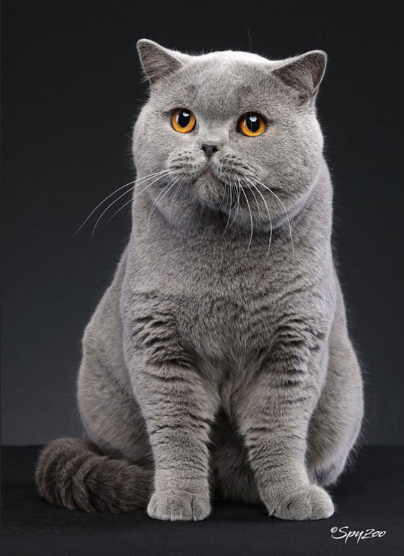
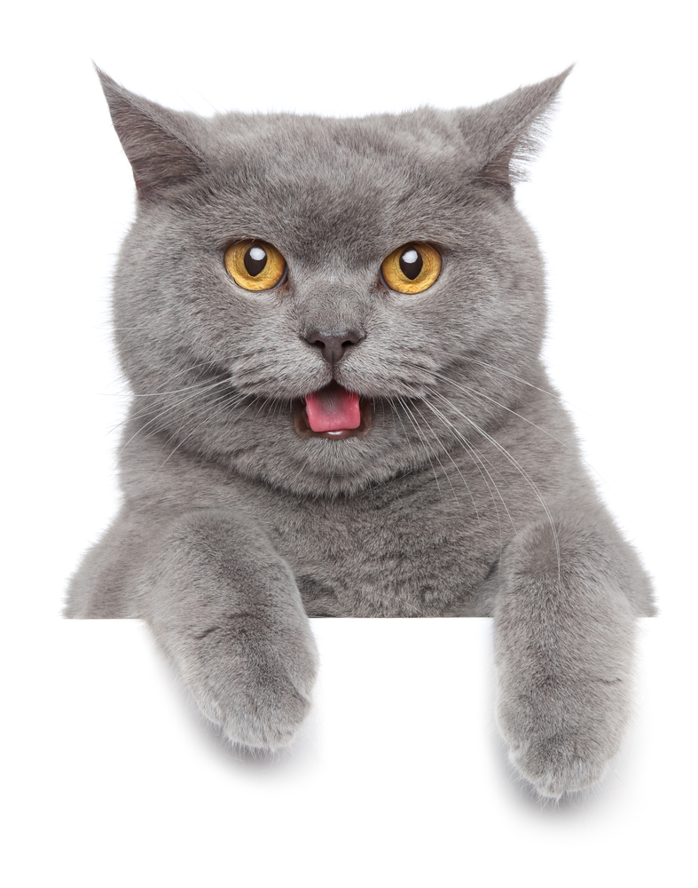

Эта порода зарегистрирована в 1898 году, но появилась она еще во времена Древнего Рима. Фелинологи считают, что предки котов-британцев попали в Римскую империю из Египта. В Британии эти кошки оказались после римского завоевания. В начале XX века порода едва не исчезла: длинношерстные породы затмили британцев популярностью, а во время двух мировых войн разведение прекратилось.

СТАНДАРТЫ ПОРОДЫ.
Британская короткошерстная — крупная порода: средний вес кошки — 5–8 килограммов. У этих кошек широкая грудь и короткие лапы, короткие и широко расставленные уши и толстый хвост средней длины. Глаза большие, круглые. Они бывают разных цветов: голубые, зеленые, янтарные и даже апельсиновые. У британских кошек есть особенность, которая делает их мордочки очень красивыми: у глаз есть черный ободок, благодаря которому кажется, будто они подведены.

ХАРАКТЕР БРИТАНЦЕВ
Британская короткошерстная кошка — спокойная, дружелюбная и преданная. Эти кошки хорошо относятся к детям, поэтому британцев можно смело брать в большую семью. Британские кошки любят внимание, но не эгоистичны.